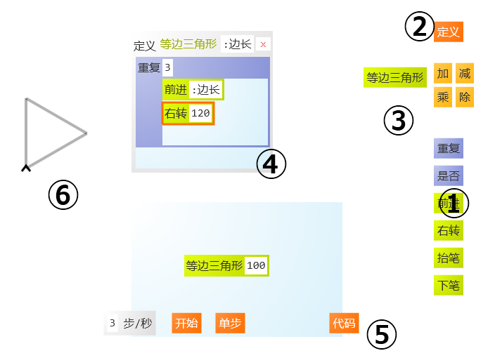

教程二：界面及功能介绍
LOGO画板的界面如下图所示：
以下对界面中的各主要部分进行详细说明：
- 基本词汇区❶
- 在基本词汇区❶中包含有LOGO画板预先定义的词汇，比如
前进和右转用于移动画笔，抬笔和下笔用于控制画笔是否在屏幕上绘图，其它词汇还包括四则运算符及流程控制等。将这些词汇拖放到动作区❹可以用来指定画笔的动作。 - 定义按钮❷
- 在LOGO画板中可以通过基本词汇的组合使用来自定义新的词汇，该功能通过定义按钮❷完成。对于新词汇具体动作的描述是在动作区❹指定。
- 自定义词汇区❸
- 所有自定义的词汇在自定义词汇区❸显示，这些词汇也可以被拖放到动作区❹。
- 动作区❹
- 动作区❹用于规划设计画笔的动作及自定义词汇的具体定义。
- 控制区❺
- 在动作区❹完成画笔动作的设计之后，可以通过控制区❺的按钮让程序执行这些动作，画笔将会在绘图区❻绘制图形。
- 绘图区❻
- 画笔的绘图区。